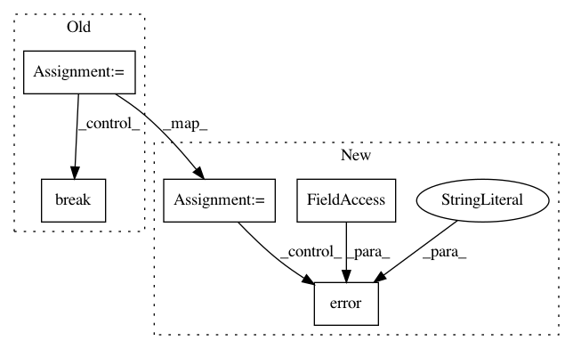

448e080c752a1b5f54c422401b41e824b0274a91,tensorflow/python/distribute/multi_process_lib.py,,_set_spawn_exe_path,#,89
Before Change
// -> tensorflow/python/some/my_test
// -> tensorflow/python/my_test
path_to_use = None
guess_path = sys.argv[0][:-3]
guess_path = guess_path.split(os.sep)
for path_reduction in range(-1, -len(guess_path), -1):
possible_path = os.sep.join(guess_path[:path_reduction] +
[guess_path[-1]])
if os.access(possible_path, os.X_OK):
path_to_use = possible_path
break
// The binary can possibly have _gpu suffix.
possible_path += "_gpu"
if os.access(possible_path, os.X_OK):
path_to_use = possible_path
break
if path_to_use is None:
raise RuntimeError("Cannot determine binary path")
sys.argv[0] = path_to_use
// Note that this sets the executable for *all* contexts.
After Change
// /.../org_tensorflow/tensorflow/python/distribute/input_lib_test.py
// and the binary is
// /.../org_tensorflow/tensorflow/python/distribute/input_lib_test_multiworker_gpu
org_tensorflow_path = sys.argv[0][:sys.argv[0].rfind("/tensorflow")]
if org_tensorflow_path.endswith("/org_tensorflow"):
binary = os.environ["TEST_TARGET"][2:].replace(":", "/", 1)
possible_path = os.path.join(org_tensorflow_path, binary)
logging.info("Guessed test binary path: %s", possible_path)
if os.access(possible_path, os.X_OK):
path = possible_path
if path is None:
logging.error(
"Cannot determine binary path. sys.argv[0]=%s os.environ=%s",
sys.argv[0], os.environ)
raise RuntimeError("Cannot determine binary path")
sys.argv[0] = path
// Note that this sets the executable for *all* contexts.
multiprocessing.get_context().set_executable(sys.argv[0])
In pattern: SUPERPATTERN
Frequency: 4
Non-data size: 5
Instances
Project Name: tensorflow/tensorflow
Commit Name: 448e080c752a1b5f54c422401b41e824b0274a91
Time: 2020-11-17
Author: crccw@google.com
File Name: tensorflow/python/distribute/multi_process_lib.py
Class Name:
Method Name: _set_spawn_exe_path
Project Name: tensorflow/tensorflow
Commit Name: de336139770c6e9e035c0e402375efda48d75301
Time: 2020-11-18
Author: crccw@google.com
File Name: tensorflow/python/distribute/multi_process_lib.py
Class Name:
Method Name: _set_spawn_exe_path
Project Name: GoogleCloudPlatform/PerfKitBenchmarker
Commit Name: 4ac8c7b29fb51b953b95499f4e25a0949673eb9b
Time: 2020-12-18
Author: skktexas@gmail.com
File Name: perfkitbenchmarker/providers/ibmcloud/ibm_api.py
Class Name: IbmAPICommand
Method Name: ListResources
Project Name: AlexsLemonade/refinebio
Commit Name: 26144701989e8d4a99f374a116021a4d7cafcfe0
Time: 2017-07-05
Author: kurt.wheeler91@gmail.com
File Name: workers/data_refinery_workers/processors/utils.py
Class Name:
Method Name: run_pipeline